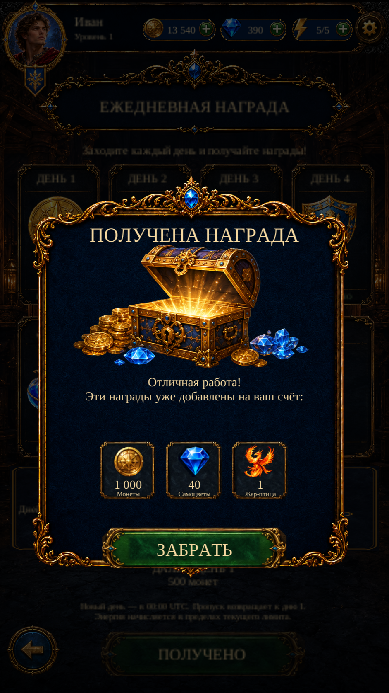

Visual Page 15 · Reward Received R1
Actual Unity Play Mode captures of the native reward confirmation, opened by a saved Daily Reward claim. Separate Scenario frame and chest, live Russian/English labels, actual saved quantities, responsive layout and a working Collect control.
The daily reward is saved before this panel opens. Collect closes it without granting anything twice. One item appears on Days 1–6; Day 7 shows three. The seven-item diagnostic tests presentation only. No invented reference rewards are added.

Unity · Day 7 actual grant · RussianReference differences remain in the exact font, frame engraving, button silhouette and outer chest sparks. The modal dims the live Daily Reward page beneath it; the reference shows Home. Gameplay remains unchanged.
Scenario: five successful jobs, 33 CU, including one corrective frame generation. Unity: 9 Edit Mode + 14 Play Mode tests passed. No APK or physical-phone verification.
Implementation and exact checks · Reference comparison · Changed files